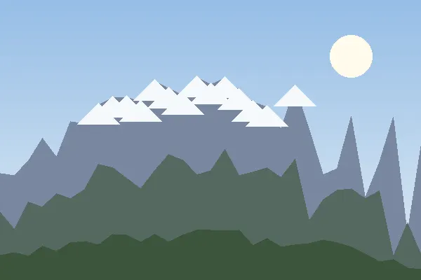
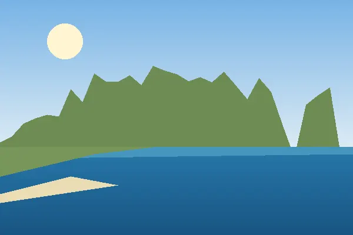

Serra da Estrela: o ponto mais alto de Portugal continental.

Gerês: o único parque nacional do país.

Arrábida: a serra que acaba no mar.
Três serras, três paisagens muito diferentes, todas a menos de cinco horas de carro de Lisboa. Neste site junto o que vi, o que gostei e o que levaria da próxima vez.
Começa pela mais alta, a Serra da Estrela, sobe ao Norte até ao Gerês e acaba na Arrábida, onde a serra desce direta ao mar.

Serra da Estrela: o ponto mais alto de Portugal continental.
Gerês: o único parque nacional do país.

Arrábida: a serra que acaba no mar.
© 2026 Ana Martins · Serras de Portugal